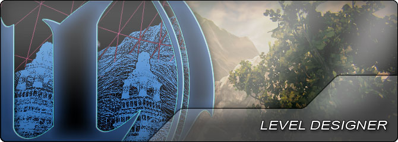

UDN
Search public documentation:
LevelDesignerHomeCH
English Translation
日本語訳
한국어
Interested in the Unreal Engine?
Visit the Unreal Technology site.
Looking for jobs and company info?
Check out the Epic games site.
Questions about support via UDN?
Contact the UDN Staff
日本語訳
한국어
Interested in the Unreal Engine?
Visit the Unreal Technology site.
Looking for jobs and company info?
Check out the Epic games site.
Questions about support via UDN?
Contact the UDN Staff
UE3主页 > 关卡设计人员
关卡设计人员

- 入门指南: 关卡设计 - 关卡设计过程的概述及主题。
- 编辑器&工具 - 虚幻编辑器及其所有工具的指南。
- 创建关卡 - 关于使用虚幻编辑器创建关卡的简介。
- 设计流程 - 关于Epic的内部设计流程的概述。
- 模块化关卡设计 - 关于模块化构建关卡的文章。
- 自动化地图构建 - 在编辑器中执行自动构建地图。
- 剪切板 - 在命名插槽中存储 剪切/复制/粘帖 操作，以便在UnrealEd中重复使用。
- 内容浏览器数据库 - 关于设置游戏资源数据库的指南。
- 地图错误 - 执行完地图检测后所显示的错误信息的参考指南。
- 战争机器多玩家地图理论 - 关于战争机器的多玩家地图流程的讨论。
- 附加Actors - 关于在UnrealEd中将actor附加到彼此之上的指南。
- Actor组合 - 创建并使用actors组合。
- Massive LOD - 在虚幻引擎 3 中使用 Massive LOD 系统创建开放 vistas 的指南。
AI
BSP & 几何体
- 使用Bsp画刷 - 关于使用CSG画刷进行工作的指南。
- 几何体模式指南 - 关于使用BSP的几何体模式工具的指南。
- 静态网格物体模式 - 关于使用静态网格物体模式来放置网格物体的指南。
- 网格物体描画模式 - 关于描画网格物体顶点颜色系统的概述。
- 材质 & 贴图 - 在虚幻引擎3中创建并使用材质。
- Kismet可视化脚本 - 关于使用Kismet可视化脚本系统的完整的参考指南。
- Matinee & 过场动画 -关于创建游戏过场动画和带动画的游戏性事件的指南。
- 关卡动态载入 - 使用动态载入系统创建无缝世界。
- Landscape(景观) - 当前用于创建较大的室外地形的系统。
- 地形 - 遗留的旧版本室外地形的系统。
- 植被 - 在关卡中描画实例化的植被和装饰物网格物体的工具。
- 光照& 阴影 - 关于使用虚幻引擎 3 中的光照和阴影进行工作的指南。
- Lightmass - 关于使用静态全局光照系统的指南。
- Lightmass工具 - 关于使用Lightmass工具来进行调试及解决问题的指南。
- 主光源 - 使用主要光源来获得高质量的动态阴影。
- 光照环境 - 优化的动态对象光照。
- 光照参考指南 - 关于UE3中的光源actors和旧版的光照系统的指南。
- 阴影参考指南 - 关于使用UE3中的各种阴影类型的指南。
- 粒子系统 - 使用粒子系统和发射器创建特效。
- 雾特效 - 创建及使用基于距离的测定体积雾特效。
- Decals(贴花) - 在表面上使用投射的材质贴花。
- 流体表面 - 创建动态的、交互性的流体表面。
- 镜头眩光 - 创建镜头眩光过场动画特效。
- 后期处理特效 - 给渲染屏幕添加全屏特效。
- 性能、分析& 优化 - 查找并修复性能问题。
- 使用 StaticMeshActor - 有关在虚幻引擎编辑器中使用 StaticMeshActor 的信息。
- 使用 InterpActor - 有关在虚幻引擎编辑器中使用移动器的信息。
- 使用 KActor? - 有关在虚幻引擎编辑器中使用刚体 actor 的信息。
- 使用声效Actors - 如果在关卡中使用环境声效actors。
- 使用环境区域 - 使用混响体积来创建环境区域。
- 使用原型 - - 关于使用Archetypes(原型)作为actor模板的指南。
- 使用预制 - 关于使用预制来重新使用组合的actors的指南。
- 使用SplineActors - 关于使用样条曲线的指南。
- 使用SplineLoftActors - 创建沿着样条曲线分布的网格物体的指南。
- 基于图像的反射 - 渲染光滑的全景HDR反射。